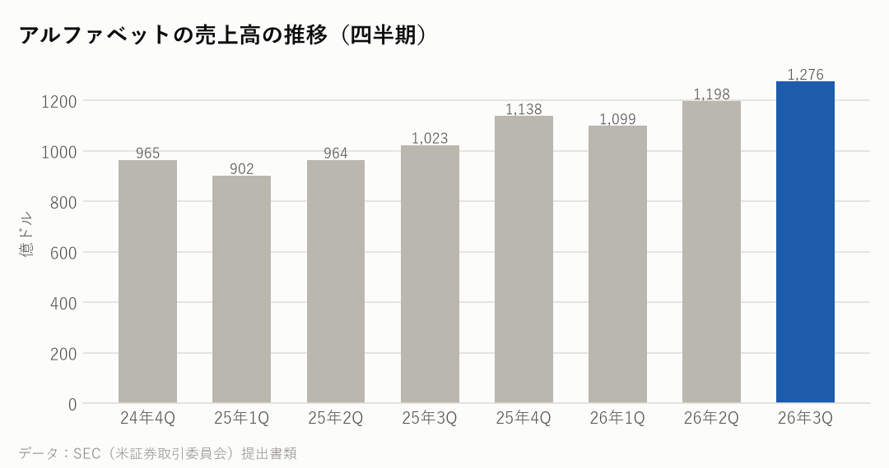
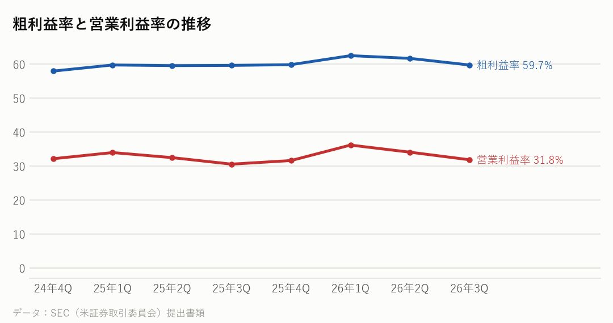
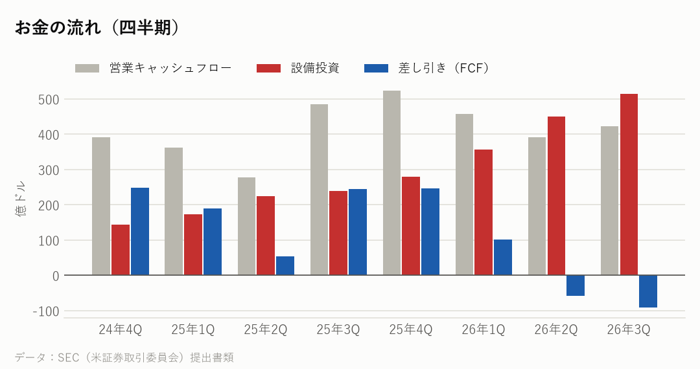
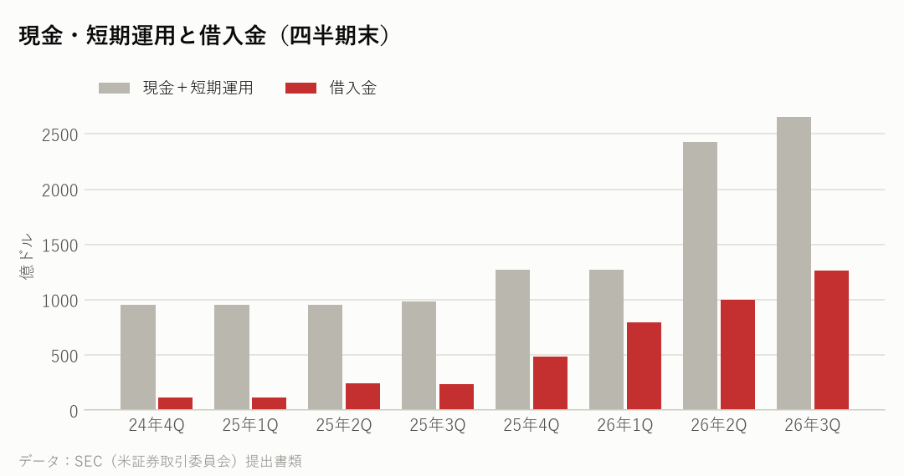
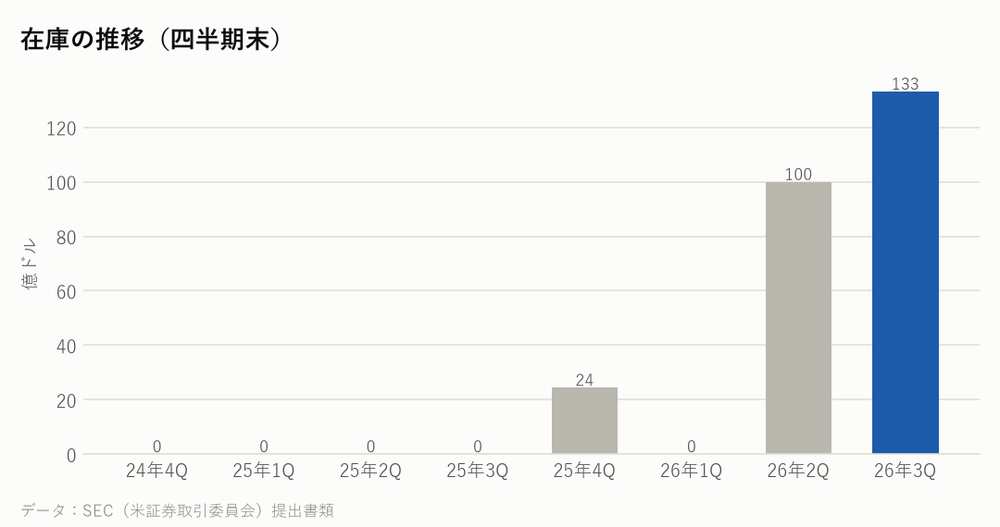

GOOGL｜2026年7〜9月期の決算｜決算発表 2026年10月28日
アルファベットの決算：クラウドがほぼ倍増、設備投資は前年の約2.1倍
7〜9月期の売上高は前年同期比25%増の1,276億ドルだった。Google Cloud が103%増の307億ドルとほぼ倍増し、自社のAI半導体（TPU）の販売も大きく寄与した。一方、株式の評価損87億ドルで純利益は24%減った。設備投資は514億ドルと前年同期の約2.1倍になった。
主な数字（2026年7〜9月期）
| 今回 | 前年同期 | 前年比 | |
|---|---|---|---|
| 売上高 | 1,276億ドル | 1,023億ドル | +24.7% |
| 粗利益率 | 59.7% | 59.6% | |
| 営業利益率 | 31.8% | 30.5% | |
| 純利益 | 265億ドル | 350億ドル | |
| 1株利益（希薄化後） | 2.12ドル | 2.87ドル |
部門ごとの売上
| 部門 | 売上 | 前年比 |
|---|---|---|
| Google のサービス（検索など） | 963億ドル | +11.0% |
| Google Cloud | 307億ドル | +103.0% |
| その他の事業（Waymoなど） | 4億ドル | +8.0% |

会社の見通し・投資
| 売上高の見通し | 示していない |
|---|---|
| 設備投資（1〜9月） | 1,320億ドル |
| 設備投資（7〜9月） | 514億ドル |
| 集めたお金（7〜9月） | 社債 287億ドル・株 124億ドル |
- アルファベットは、売上や設備投資の年間の見通しの数字を決算発表では示していない。
- 1〜9月の設備投資は1,320億ドルで、前年同期（636億ドル）の約2.1倍になった。
- ピチャイCEOは、TPU の需要が強く、計算の能力を増やすことを急いでいると説明した。新しいAIモデル Gemini 4 の公開のときに、能力が足りなかったことにも触れた（報道より）。
もうけの力

お金の状況



投資している分（出資の評価額）
| 未上場株などへの出資（帳簿上） | 1,282億ドル |
|---|---|
| 上場株への出資（時価） | ― |
| 合計 | 1,282億ドル |
| 株式の評価損益（7〜9月期） | −87億ドル |
- 株式の評価損は87億ドルで、1株利益を0.55ドル押し下げた（決算発表より）。前年同期は107億ドルの評価益だった。どの出資先の評価が下がったかは、決算発表には書かれていない。
- アルファベットは、Anthropic や SpaceX などにも出資している。未上場の会社などへの出資は、帳簿上で1,282億ドル。
大手クラウドの会社と比べると
各社の直近の四半期。在庫の日数は「在庫が売上原価の何日分か」。
| 会社 | 決算期末 | 売上高 | 前年比 | 粗利益率 | 営業利益率 | 設備投資/売上 | 在庫の日数 |
|---|---|---|---|---|---|---|---|
| アルファベット | 2026-09 | 1,276億ドル | +24.7% | 59.7% | 31.8% | 40.3% | 24日 |
| マイクロソフト | 2026-09 | 923億ドル | +18.8% | 67.8% | 49.8% | 42.7% | 6日 |
| アマゾン | 2026-09 | 2,019億ドル | +12.1% | 53.2% | 13.9% | 38.3% | 41日 |
| メタ | 2026-09 | 646億ドル | +26.1% | 79.3% | 20.1% | 52.5% | ― |
| オラクル | 2026-08 | 193億ドル | +29.6% | ― | 34.8% | 147.3% | ― |
NasdaqWhy の視点：データから読み取れる注目点
決算資料と各社の公式データを並べて読み取れることです。将来を予想するものではありません。
- Google Cloud の営業利益は111億ドルで、前年同期の約3.1倍。利益率は約36%（前年同期は約24%）に上がった。売上の伸びには、自社で設計したAI半導体 TPU の販売も大きく寄与したと説明している。
- TPU は Google が設計し、ブロードコムが設計を手伝うAI半導体で、HBM などのメモリーを使う。TPU の需要が強く能力が足りないという説明は、ブロードコムやメモリーの会社の売上の伸びとつながっている。
- 設備投資は514億ドルで、売上の約40%にあたる。差し引きのお金（FCF）は91億ドルのマイナスになった。7〜9月期には、社債で287億ドル、株の発行で124億ドルを集めている（決算発表より）。
- 検索などは12%増の634億ドル、YouTube の広告は9%増の112億ドル。AIへの投資が増えるなかでも、本業の広告は伸びを保った。
- その他の事業（Waymo など）の赤字は21億ドルで、前年同期（14億ドル）より広がった。
次に確認したい決算・予定
- エヌビディアの決算（11月下旬の見込み）：大手クラウドの投資が、AI半導体の売上にどう出ているか。
- ブロードコムの決算（12月中旬の見込み）：TPU などの専用のAI半導体の売上を確かめる材料。
- アルファベットの次の決算（2027年2月初めの見込み）：Google Cloud の伸びが続いたか、設備投資がどこまで増えたか。
関連リンク
出典：アルファベット 決算発表（2026年10月28日）・四半期報告書（10-Q）、決算説明会の報道（datastudios）、各社の SEC 提出書類
※情報提供のみ。投資判断はご自身でお願いします。※Nasdaq Whyは独立した情報メディアです。Nasdaq, Inc.およびその関連会社とは関係ありません。